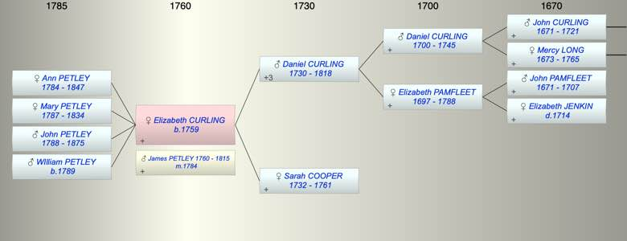

| [Index] |
| Elizabeth CURLING (1759 - ) |
|  |
| b. 1759 at St Laurence |
| m. 22 Jul 1784 James PETLEY (1760 - 1815) at St Laurence |
| Parents: |
| Daniel CURLING (1730 - 1818) |
| Sarah COOPER (1732 - 1761) |
| Children (4): |
| Ann Cooper PETLEY (1784 - 1847) |
| Mary PETLEY (1787 - 1834) |
| John PETLEY (1788 - 1875) |
| WIlliam PETLEY (1789 - ) |
| Events in Elizabeth CURLING (1759 - )'s life | |||||
| Date | Age | Event | Place | Notes | Src |
| 1759 | Elizabeth CURLING was born | St Laurence | Note 1 | ||
| 1761 | 2 | Death of mother Sarah COOPER (aged 29) | St Laurence | Note 2 | |
| 22 Jul 1784 | 25 | Married James PETLEY (aged 24) | St Laurence | Note 3 | |
| 11 Aug 1784 | 25 | Birth of daughter Ann Cooper PETLEY | MInster in Thanet | Note 4 | |
| 27 Jun 1787 | 28 | Birth of daughter Mary PETLEY | Minster in Thanet | Note 5 | |
| 1788 | 29 | Birth of son John PETLEY | |||
| 1789 | 30 | Birth of son WIlliam PETLEY | |||
| 1815 | 56 | Death of husband James PETLEY (aged 55) | ex will | ||
| 01 Aug 1818 | 59 | Death of father Daniel CURLING (aged 88) | St Laurence | Note 6 | |
| 1834 | 75 | Death of daughter Mary PETLEY (aged 47) | |||
| 1847 | 88 | Death of daughter Ann Cooper PETLEY (aged 63) | |||
| 1875 | 116 | Death of son John PETLEY (aged 87) | |||
| Death of son WIlliam PETLEY | Note 7 | ||||
| Created on a Mac™ using iFamily for Mac™ on 8 Oct 2023 |